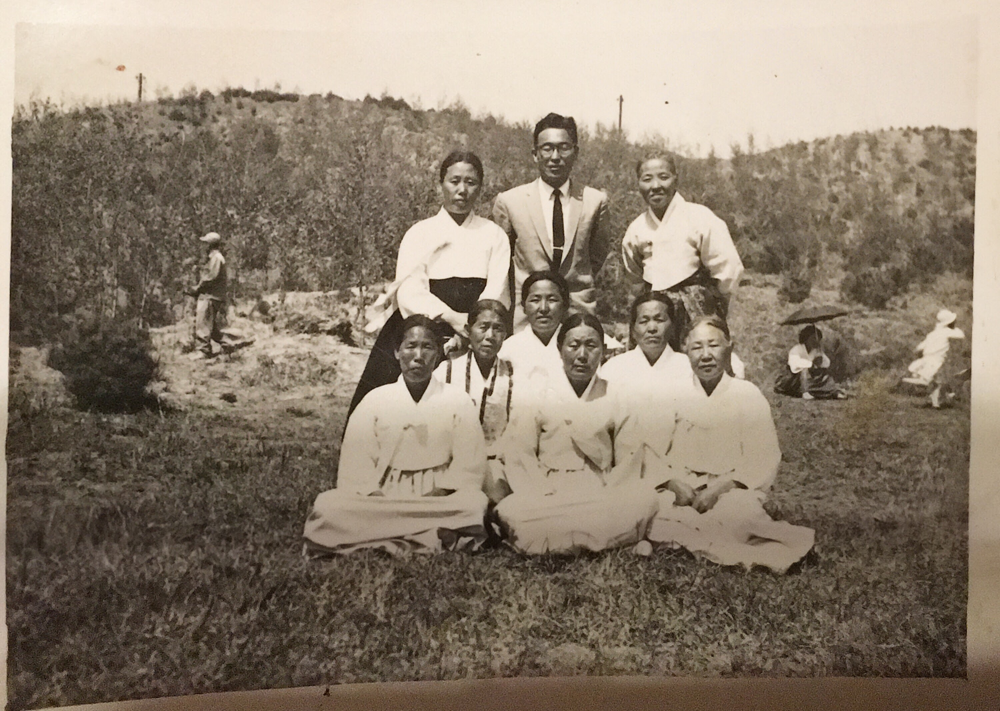
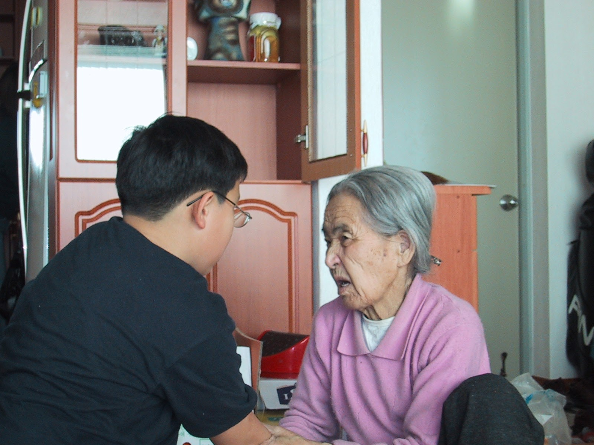
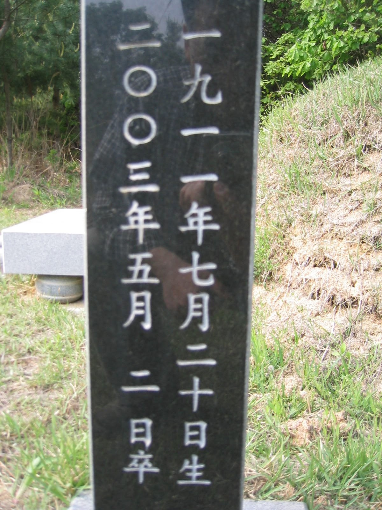
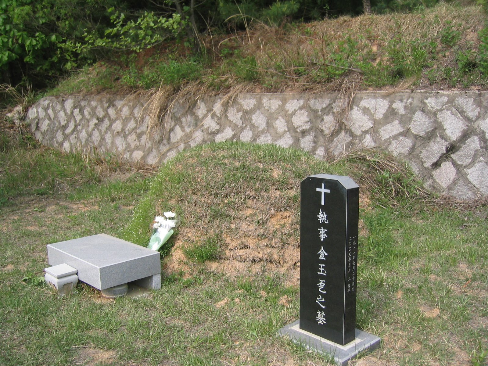
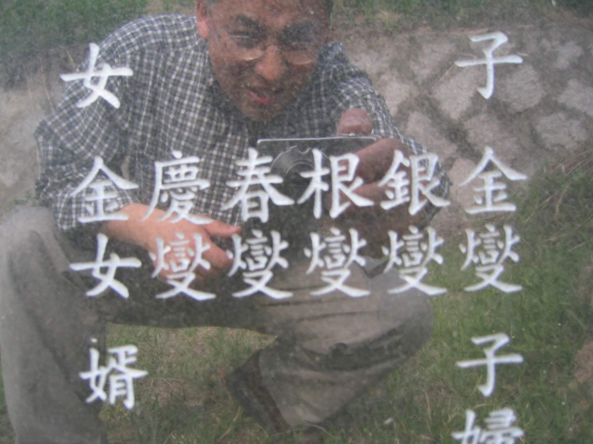
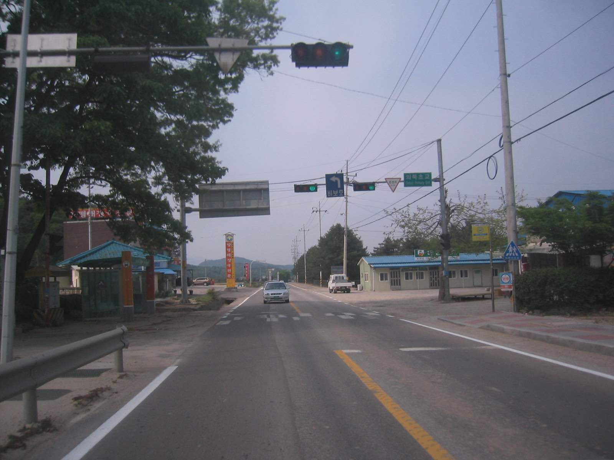
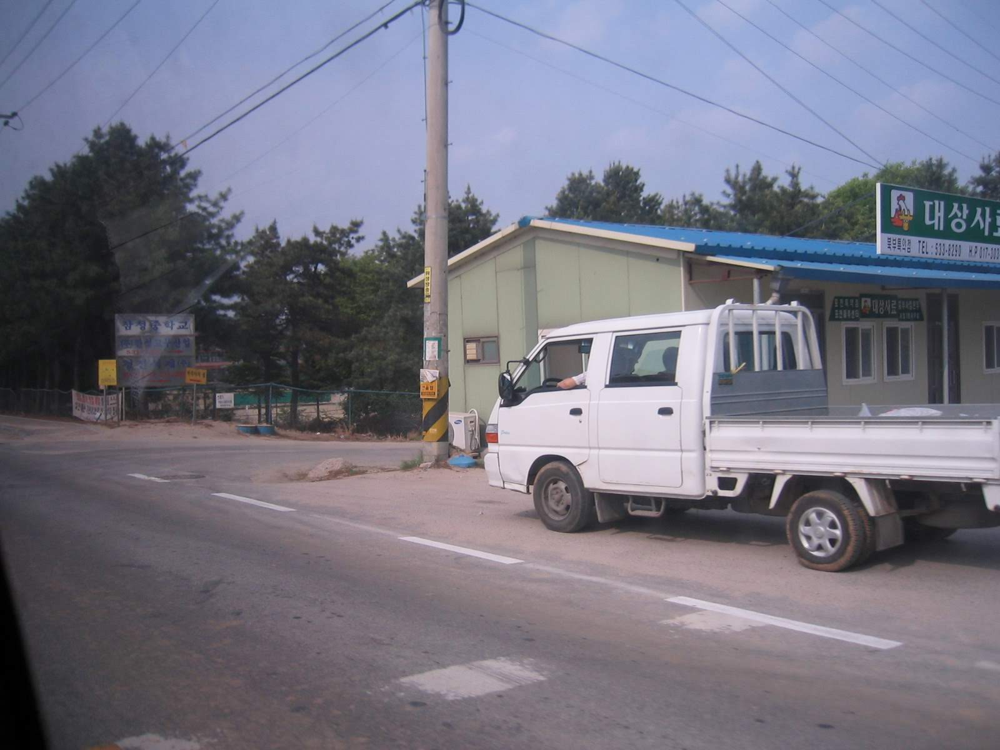
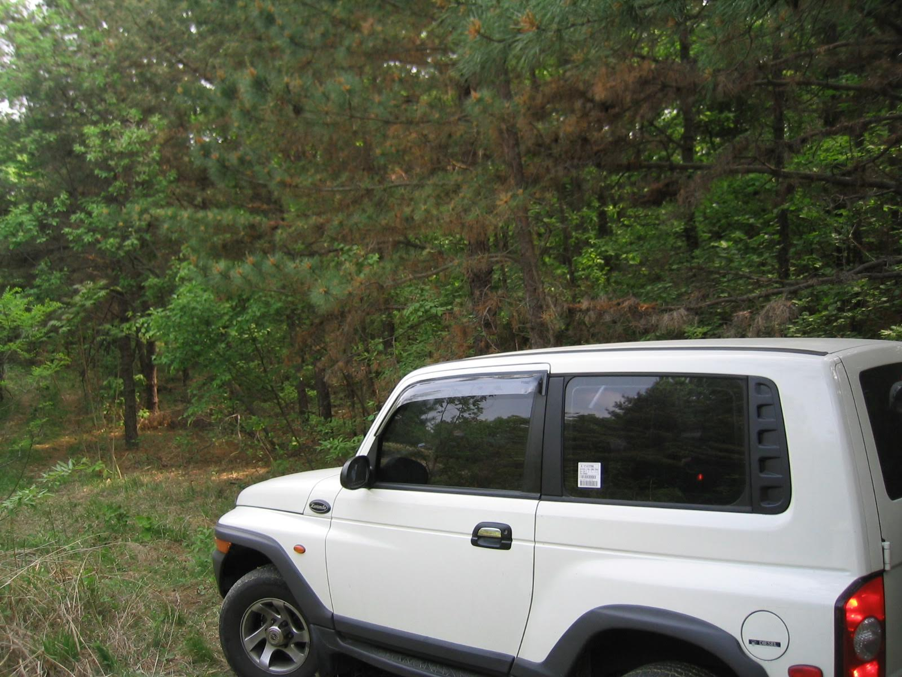
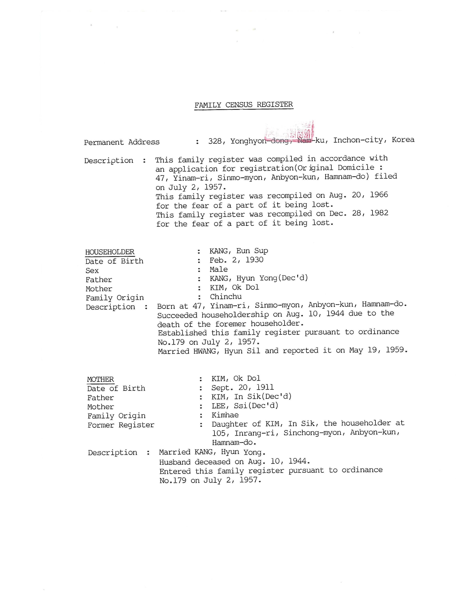

Grandma Kim (김옥돌, 金玉乭) was born in the early 1900s, when Korea was transitioning from Kings to a period of occupation.
She was born a year after the last 조선 Dynasty King, 순종 (純宗), was forced abdicate.
At the urging of her older brother, 김동훈, the family moved from 함경도 to 서울, before the start of the Korean War.1
Grandma and Grandpa were able to establish a home near 서울.
However, when the war started, my father was called into the South Korean Army.
And the family retreated further south.
During this upheaval and confusion, my grandfather and my father’s older brother were lost and never heard from again.
Subsequently, my grandmother either lived alone or with my family or with her youngest son and his wife, for the balance of her life.
Although Grandma adjusted to the city living, she loved country side and she was a farmer at heart.
We used to have a black and white photo of her wearing a hat and carrying basket and sickle to harvest her crops.
For her, no greater joy than cultivating crop and raising farm animals.
There was a gathering on August 1990 to celebrate her 80th Birthday. A Family Gathering
We got see her extended family, for the first time in nearly 2 decades.
She spent time with our family after she turned 90.
Behind our urban apartment, there was a path that led to a hill and the hiking trail with moderate incline.
Grandma could out-climb most young people, even in her 90s.

She was a devout Christian.
From the time I had left Korea and returned with a family of my own, I hadn’t seen her in nearly 25 years.
During those years her faith in Christ had increased, Christ was the center of her life.
She shared life’s lessons with her grandchildren. Also her great grandchildren,

Grandma passed away, a year after we left Korea. She was nearly 93 years old.
It is a common practice to cremate now days in Korea.
However, she was buried in a plot that is owned by my dad’s youngest brother’s in-laws.
The in-laws were also from North Korea, and for a time took care of our Grandma near their home in 평택
I am grateful for her dedication as a faithful Christian.
She was a devoted grandmother to us.
The best one can hope for.

- Born, 20 September 1911 (according records), 20 July 1911 (on the grave marker). The difference may be due to 양력 versus 음력. Lunar vs. Western Calendar.
- Passed Away, 2 May 2003


Direction to her grave : 포천 area
During May of 2005, with my uncle (her youngest son) and his son 원석, visited her grave.
From Seoul, drive out to 의정부. Drive towards 포천. Take freeway 29 until it merges with Route 43.
Drive until local road, 368 junction. Drive west towards the 4 way intersection below.
Drive until you arrive at this intersection. https://maps.app.goo.gl/8y6xQ9cTKmEB8yDt7

You will be driving on the road that passes. 삼성중학교 https://maps.app.goo.gl/5soJuHMMhJSzNKvXA

Her grave is near here Latitude, Logitude (37.96509561583131, 127.1991454199955)
For accurate direction, check with locals once you arrive at the 외북초교 교차로
High clearance vehicle is recommended. Our cousin drove his Korando shown below.

Family Records

Footnotes
https://oakhi.github.io/Life-Begins-When/posts/20230103%2038th%20Parallel/↩︎